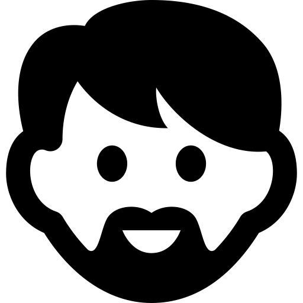
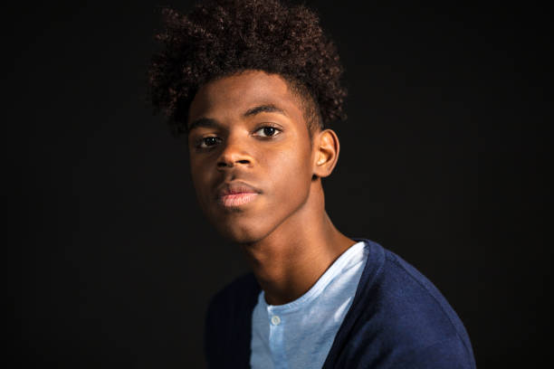

Smile detection applications are countless from activating a camera shutter automatically, enhancing human-robot interaction, to being incorporated into assistive communication devices for people with disabilities. Using deep learning convolutional neural network algorithms, a smile detection algorithm with an accuracy of 89% was achieved!
 As a project I created Dad Jokes for Smiles, a Flask-powered web application to showcase a smile detection algorithm trained using convolutional neural networks. It takes input from a user's webcam and returns predictions on how much they're smiling! It also provides random dad jokes from icanhazdadjoke's API for fun and because why not.
Motivation
Motivation for the project came from a previous program I wrote to detect smiles 7 years ago where the algorithm was based on my naive knowledge of what it means for someone to be smiling. For example, I detected the mouth using edge detection then identified smiles based on color pixel changes (red vs white).
Problem
Of course this was highly sensitive to noise (i.e. lighting, face orientation, etc). Nowadays with more computing power, we can simply use machine learning to do a better job and remove human bias! Convolutional Neural Networks (CNNs) can find new variables we didn't even know matter and their weights to improve our model. Hypothetically, it might even determine how much ones's crow's feet around the eye impact smile predictions.
Demo Video
Click the screenshot below to see a demo.

Process
Web Scraping
Total of 8,600 images were scraped from Getty Images based on searches for "smile" and "no smile".

Refer to getty_scraper.py and images folder on my GitHub
Tools used:
requestsBeautifulSoup
Image Pre-processing
Images collected were then:
- cropped with a bounding box around faces detected
- converted to grayscale
- resized down to 100 x 100 px
- convert into an array
- normalized
Image dataset was split into a training set and a test set (for model evaluation).
Random transformations and normalization operations (i.e. adjusting for rotation and lighting) were configured on the training set to create more variation for the model to learn.


Image to array example (each pixel ranging from 0 to 255):

Refer to cnn_model_training.ipynb and images folder on my GitHub
Tools used:
PIL- Imageface_recognitiontensorflow.keras- array_to_img, img_to_array, ImageDataGenerator, to_categoricalsklearn- MinMaxScaler, LabelEncoder, train_test_split
 Training the Model - Convolutional Neural Network (CNN)
Training the Model - Convolutional Neural Network (CNN)
A convolutional neural network model was trained using the images.
Refer to cnn_model_training.ipynb for layers and weights used in the CNN on my GitHub
Tools used:
tensorflow.keras- Sequential, Input, Conv2D, MaxPooling2D, Dropout, Dense, Flatten, EarlyStopping
Saving the Model
The CNN model and weights learned were saved and can be used to predict smile versus no smile on any new image coming from the app. The model was saved under my_model.h5 and MinMaxScaler under scaler.save.
Refer to cnn_model_training.ipynb and models folder on my GitHub
Tools used:
sklearn- joblibtensorflow.keras- save, load_model
Flask App
The app can be generated with the following files:
app.py: main application to runcamera.py: contains Camera object to capture live video feed andget_frame()function return image with a bounding box marked around the face and text indicating smile probabilitiesgenerate_joke.py: containsget_joke()function to access icanhazdadjoke's API and return a random generated jokesmile_recognition.py: containspredict_smile()function which takes in an image frame and returns smile predictions
Future Work
- Publish the app online
- Make sure it's compatible on all platforms, devices, and camera settings
- Improve the CNN model
- Some ideas for improvements include:
- Relabel dataset to ensure images are correctly categorized as smile or no smile
- Optimizing neural network parameters
- Increasing dataset
- Using larger image sizes
- Using RGB images instead of grayscale
- Some ideas for improvements include:
- (nice to have) Improve UX/UI of the application
Keep smiling... it makes people wonder what you are up to.